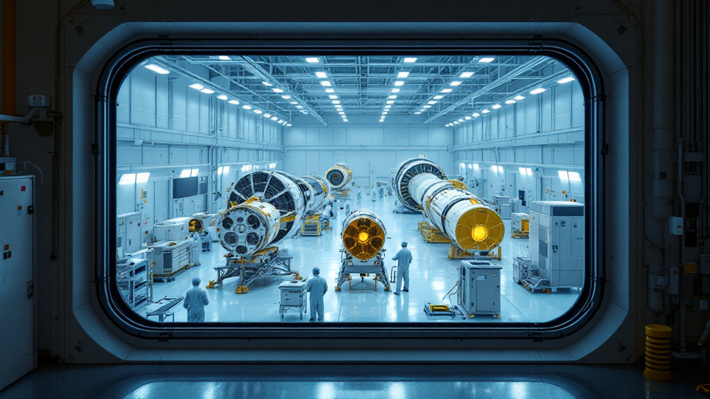
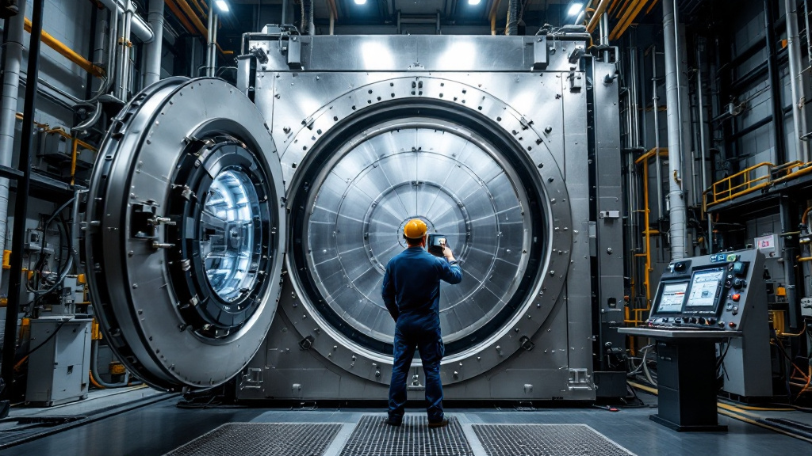

参入ガイド
中小製造業が宇宙産業に参入するには — 何から始めるべきか
「宇宙は大手だけの世界」ではない。町工場が宇宙部品を受注するまでに何が必要か、実際の入口を順に整理する。
続きを読む →宇宙開発をわかりやすく掘り下げる読み物。
「宇宙は大手だけの世界」ではない。町工場が宇宙部品を受注するまでに何が必要か、実際の入口を順に整理する。
続きを読む →
月・火星・低軌道──いま世界の宇宙開発が同時多発的に加速している。全体像を一枚の地図にする。
続きを読む →
「認証がないと参入できない」は誤解だが、品質管理体制の要求は確実に厳しい。何がどう違うのかを具体的に整理する。
続きを読む →ロケットは上に飛ぶだけでは宇宙に留まれない。「軌道に乗る」とは何なのかを、できるだけやさしく解き明かす。
続きを読む →
宇宙は少量多品種の世界だった。しかし数千機規模の衛星群が現れ、製造業が得意とする量産の領域が初めて開いた。
続きを読む →
「JAXAと取引したい」と思っても、どこから手をつければいいか分からない。入札参加資格の取り方から、実際に案件を見つけるまでの道筋を整理する。
続きを読む →
地上では優秀な材料が、宇宙では使い物にならないことがある。なぜそうなるのか、どう選べばいいのかを、材料の視点から整理する。
続きを読む →
宇宙産業の話題はロケットに偏りがちだが、お金が動いているのは別の場所だ。市場の構造を分解し、製造業にとっての機会がどこにあるかを見る。
続きを読む →「新しい設備を買わないと無理」と思われがちだが、実際に費用がかかるのは別の場所だ。参入コストの内訳を、順序も含めて整理する。
続きを読む →
宇宙機は打ち上げ前に地上で徹底的に試験される。どんな試験があり、部品メーカーは何を求められるのか。試験設備そのものが参入の入口にもなる。
続きを読む →技術があっても、相手に届かなければ受注はない。宇宙企業への接触経路、送るべき資料、避けるべき進め方を実務レベルで整理する。
続きを読む →「打ち上げて終わり」だった宇宙が、軌道上で整備する時代に入りつつある。地上の機械・ロボット技術がそのまま効く、製造業にとって最も近い新市場を解説する。
続きを読む →